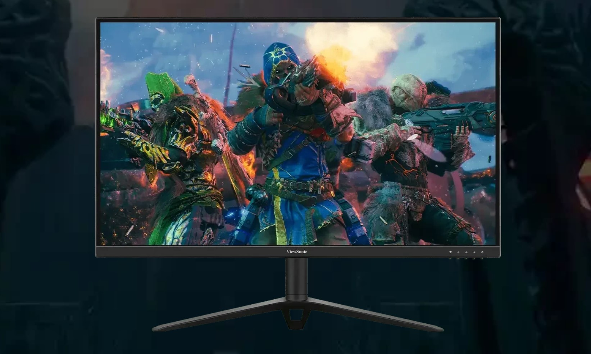

VX2428
24-дюймовый игровой монитор с матрицей Fast IPS и частотой 180 Гц
Сколько бы вы не играли, в любое время суток, с монитором Omni VX2428 у вас всегда есть преимущество в игре.Сертификаты AMD FreeSync™ Premium, VESA Adaptive Sync и VESA clearMR обеспечивают высочайшее качество изображения с четкостью и без искажений. Быстрая панель IPS обеспечивает реалистичную картинку с высококачественной цветопередачей, а частота обновления 180 Гц VX2428 позволяет наслаждаться плавным движением объектов на экране и минимальную задержку ввода. Вы не только будете заниматься любимым делом — включая редактирование фото и видео, длительные игровые сессии, или офисные задания — вы будете работать на элегантном мониторе с красивым дизайном.
НЕПРЕРЫВНАЯ ИГРА
Чем больше вы играете, тем лучше вы играете. Вам нужно работать, но в жизни есть нечто большее. Благодаря редко использованной тройной сертификации по стандартам VESA ClearMR, AMD FreeSync Premium, а так же VESA Adaptive Sync ваш монитор оснащен технологиями защиты от разрывов и размытия изображения. При этом предоставляется плавность изображения и реалистичные визуальные эффекты даже в самых продвинутых играх. С данным монитором вы получаете мощность, которая дает вам преимущества в течение всего дня и ночи.

ОПТИМИЗАЦИЯ КАЖДОГО ДВИЖЕНИЯ
Монитор OMNI VX2428 с высокой частотой обновления изображения в 180 Гц обеспечивает идеальную игровую и видеоредакторскую платформу, не требующую дополнительной настройки. Плавные и безукоризненные визуальные эффекты позволяют метко поражать цели снова и снова, не глядя на их скорость перемещения. В моменты, когда каждый миг имеет значение, вы не желаете упустить ни одной детали.

ВПЕРЕД БЕЗ ОГРАНИЧЕНИЙ
Превосходная точность прицеливания и молниеносная реакция обеспечиваются временем отклика OMNI VX2428, составляющим 0,5 мс (MPRT) / 1 мс (GTG). Это обеспечивает высочайшую производительность и мягкие переходы между кадрами без размытия или деформации визуальных элементов. С этим инструментом в арсенале вы будете доминировать в любимых шутерах от первого лица (FPS) и наслаждаться каждой захватывающей сценой в фильмах.

ИЗУМИТЕЛЬНАЯ ГАММА ЦВЕТОВ
Специальная IPS-панель монитора OMNI VX2428 обеспечивает выдающуюся передачу цветов, объединяя высокую точность и насыщенность. Это позволяет максимально погрузиться в игровой мир. В сочетании с широким углом обзора монитор всегда обеспечивает наилучшие условия для игр и работы.
УГЛУБЛЕННЫЕ ТЕКСТУРЫ, НАСЫЩЕННЫЕ ЦВЕТА И КОНТРАСТНОСТЬ
Благодаря контролю над гаммой, предоставляемому HDR10, вы погружаетесь в мир ясности и детализации. Наслаждайтесь глубокими контрастами, живыми цветами и четкими деталями, исследуя фантастические миры, пересматривая фотографии или наслаждаясь любимыми фильмами.
ЗАБОТА О ГЛАЗАХ
Защита от синего света и технология устранения мерцания позаботятся о здоровье ваших глаз, обеспечивая комфорт даже в условиях недостаточного освещения.

БЕСКОНЕЧНЫЕ ВОЗМОЖНОСТИ ПОДКЛЮЧЕНИЯ
Не нужно больше выбирать между ПК и консолью. Опыт свободы с различными опциями подключения, включая два HDMI 1.4 и один DisplayPort 1.4 порта. Эти интерфейсы поддерживают 180 Гц частоту обновления, позволяя вам подключить все периферийные устройства одновременно. Переключайтесь мгновенно, не теряя времени на настройку.